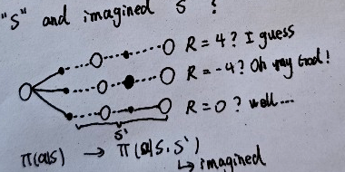

As announced in the official website of Advanced Machine Intelligence (AMI) co-founded by Yann LeCun, an action-conditioned world model is trained to be able to predict(or imagine) the consequence of its action, which gives it the ability of planning action sequences to accomplish a task.
The statement inspired me: As far I know about RL, the policy is to make decision ONLY based on current state: P(a|s), though in NLP the "s" is a bit longer. It's first order Markov Chain. What if the model makes decision based on BOTH past and future? Of course, the "future" is imagined future. For example, before the policy choose action "go ahead", how about let the model complete the possible consequence, and the policy make final decision based on "s" and imagined "s'"?